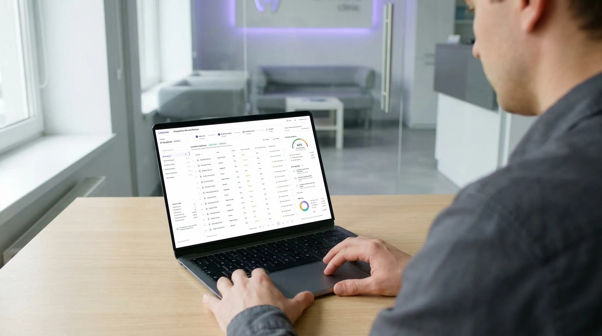

Confirm the permitted read path
Document the cohort, PMS mix, approved fields, purpose, extraction method, access roles, retention, and vendor dependencies.
Stage 04 · Target-specific diligence
When an acquisition becomes real, Leyoxa moves from public intelligence into an approved, read-only evidence package covering systems, record continuity, migration verification, exceptions, limitations, and buyer sign-off.

Document the cohort, PMS mix, approved fields, purpose, extraction method, access roles, retention, and vendor dependencies.
Measure note depth, identifiers, plans, procedures, charting, dates, source links, and unavailable fields by location.
Define the clinical-review boundary, limitations, known obligations, escalation, export, and post-close responsibility before full production access.
One readiness report, one source-linked portfolio ledger, and a post-close worklist assigned to accountable roles.

Location-by-location access status, source coverage, chart-note quality, and unavailable data.
Each item carries source, age, state, recorded plan value, owner, and next action.
The acquirer keeps the ledger, worklist, methodology, limitations, and audit trail.
Planning ranges are public so a buyer can decide whether a conversation is useful. Final fixed scope follows access and quality review.
A bounded chart and field sample, access-path assessment, source-quality findings, and go/no-go recommendation.
Approved read-only reconciliation, source-linked Care Ledger, owner-assigned handoff, methodology, limitations, and audit trail.
USD planning ranges. Portfolio pricing depends on location count, PMS mix, history, field depth, vendor access, close date, and delivery window.
The manual-first engagement is designed to test the commercial and data assumptions before more connectors or automation are built.
No patient data is accessed until scope, price, responsibilities, vendors, safeguards, retention, and exclusions are signed.